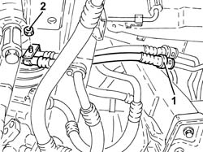
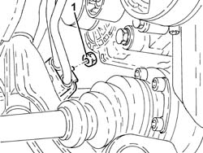
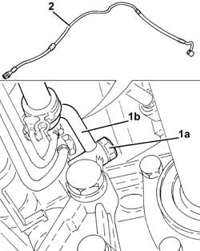
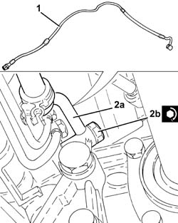

4130B49 return pipe from power steering case to heat exchanger pipe r r
- Path
- Procedures > 41 STEERING > 4130 POWER ASSISTED STEERING > 4130B power steering hydraulic sytem > 4130B49 return pipe from power steering case to heat exchanger pipe r r
- Kind
- repair procedure (removal / refitting; the operation number is the code)
- Applies to
- engines: 1.9 JTD 16v; all production periods
- Interactive page
- https://sloeber94.github.io/elrnDB-a156/en/#/3238141
Applies to: engines: 1.9 JTD 16v; all production periods
 Removing
Removing
 Refitting
RefittingPosition the vehicle on the ramp.
Proceed with removal 4450B12 front or rear wheels (two) - r+r .
Proceed with removal 7055B54 under-engine guard - r r .
Proceed with removal 7055B64 Engine compartment DUST shield in front wheel arch (one), left or right - R.R. .
Proceed with removal 7055B42 Additional FRONT WHEEL ARCH (one), left or right - R.R. .
Proceed with removal 7055A43 central front grille - r r .
Proceed with removal 7055A41 RIGHT FRONT GRILLE - R.R. .
Proceed with removal 7210E10 R.R. FRONT BUMPER .
Proceed with removal 1084C40 Air DUCT for engine oil cooling radiator - R.R . .
1. Disconnect the quick-release fitting on the return pipe from power steering box to heat exchanger, heat exchanger side.
2. Undo the nut for the front bracket fastening the supply and return pipes to the power assisted steering system heat exchanger.

Applies to: engines: 1.9 JTD 16v; all production periods
1. Undo the nut for the rear bracket fastening the supply and return pipes to the power assisted steering system heat exchanger.

Applies to: engines: 1.9 JTD 16v; all production periods
1. Undo the connector (1a) and disconnect the return pipe from power steering box to heat exchanger (1b), power steering box side.
2. Release and remove the return pipe from the power assisted steering box to the heat exchanger.

Applies to: engines: 1.9 JTD 16v; all production periods
Refitting
Removing1. Refit the return pipe from power steering box to heat exchanger in its seating.
2. Connect the return pipe from power steering box to heat exchanger (2a), power steering box side, and tighten the connector (2b) to the recommended torque.
 | Fastening | Component | Ø | Value (daNm) |
|---|---|---|---|---|
2b | Connector | PIPE FROM POWER STEERING BOX/EXCHANGER | M12 | (Power steering box side) 2.7 ÷ 3.3 |

Applies to: engines: 1.9 JTD 16v; all production periods
Tighten the nuts for the brackets fastening the supply and return pipes to the power assisted steering system heat exchanger.
Connect the quick-release fitting on the return pipe from power steering box to heat exchanger, heat exchanger side.
Proceed with refitting 1084C40 Air DUCT for engine oil cooling radiator - R.R . .
Proceed with refitting 7210E10 R.R. FRONT BUMPER .
Proceed with refitting 7055A41 RIGHT FRONT GRILLE - R.R. .
Proceed with refitting 7055A43 central front grille - r r .
Proceed with refitting 7055B42 Additional FRONT WHEEL ARCH (one), left or right - R.R. .
Proceed with refitting 7055B64 Engine compartment DUST shield in front wheel arch (one), left or right - R.R. .
Proceed with refitting 7055B54 under-engine guard - r r .
Proceed with refitting 4450B12 front or rear wheels (two) - r+r .
Fill the power steering circuit with the recommended fluid.
 | Type | Component | Name | Qty. |
|---|---|---|---|---|
- | Fluid | HYDRAULIC POWER ASSISTED STEERING SYSTEM | TUTELA GI/A | 1.3 |
Bleed the power steering system as described below
With the front wheels raised off the ground, with the engine switched off turn the steering wheel to full lock, left and right, 4-5 times.
Check and, if necessary, top up the fluid level in the reservoir.
Remove the car from the ramps.
Start the engine and carry out 4 - 5 full steering wheel turn cycles (right and left).
Top up the fluid level in the reservoir.
Topics linked from this page (8)
- 1084C40 Air DUCT for engine oil cooling radiator - R.R .
- 4450B12 front or rear wheels (two) - r+r
- 7055A41 RIGHT FRONT GRILLE - R.R.
- 7055A43 central front grille - r r
- 7055B42 Additional FRONT WHEEL ARCH (one), left or right - R.R.
- 7055B54 under-engine guard - r r
- 7055B64 Engine compartment DUST shield in front wheel arch (one), left or right - R.R.
- 7210E10 R.R. FRONT BUMPER